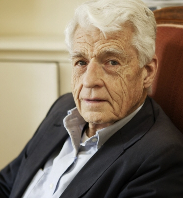
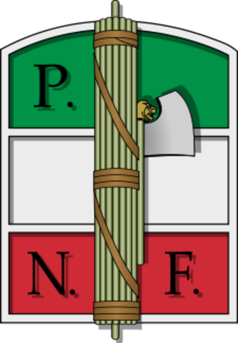
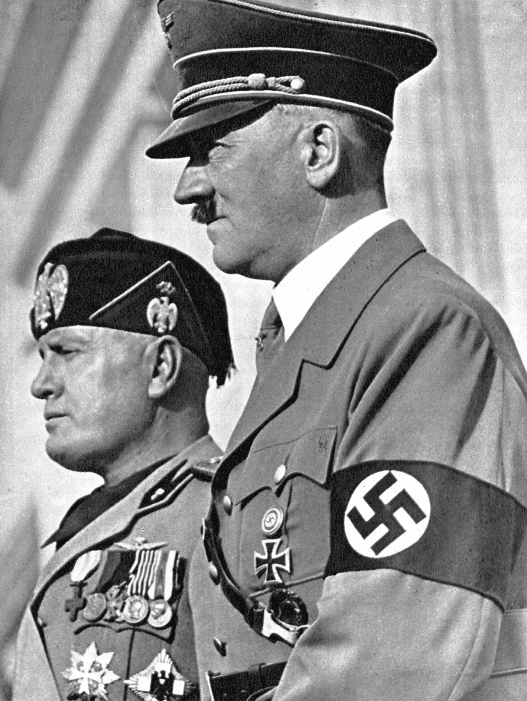

A ASCENSÃO DO NAZIFASCISMO NA EUROPA
CONTEXTO
Anos após a Primeira Guerra, a Europa estava desolada: desemprego, inflação em alta e destruição, havia também muitos soldados mutilados e inúmeros moradores de rua. Os europeus mostravam sua insatisfação por meio de protestos, greves e revoltas, isso quando não defendiam soluções mágicas que fariam necessário o uso da força para melhorar as condições da sociedade. Dessa necessidade de um líder autoritário e forte que guiaria as pessoas pelo rumo certo, se desenvolveu o fascismo e o nazismo na Europa e depois chegou a outros continentes do mundo.FASCISMO SEGUNDO PAXTON
|  |
|---|
| Historiador Robert Paxton |
Indivíduo deve se subordinar ao grupo.
Ações contra o adversário pode ser legal ou ilegal, como justificativa o fato de que a sociedade era vítima.
Aversão à democracia, socialismo e liberalismo.
Os membros da comunidade devem visar à integração, seja por consenso ou pela exclusão violenta do outro.
Um povo possui o direito de dominar o outro, independente da lei dos homens ou de deus.
O chefe nacional deve ser do sexo masculino e capaz de conduzir a cominidade rumo ao destino histórico.
FASCISMO ITALIANO
O jornalista e político Benito Mussolini foi o idealizador e principal liderança do fascismo italiano. Após a Itália sair da Primeira guerra, ela ficou com enormes perdas materiais e humanas. Não obteve os ganhos territoriais prometidos por participar do conflito, políticos então nutrindo a idéia de que o orgulho nacional foi ferido, Benito Mussolini funda em 1919, os Fasci Italiani di Combattimento que era um movimento nacionalista extremado, antiliberal, que possuía uma organização paramilitar liderada por ex-oficiais e formada por marginais e jovens ricos.|  |
|---|
| Simbolo do Partido Nacional Fascista |
Aproveitando uma greve iniciada pelos socialistas, Mussolini liderou uma marcha até a Roma exigindo maior espaço no governo e assim ele se torna primeiro-ministro. Com esse poder, o fascismo desenvolve um Estado totalitário que reprime qualquer opinião contrária ao governo. Em 1924, durante o período de eleições, fascistas roubam as urnas, usam de violência para conseguir votos e ganham com ampla vantagem.
No ano de 1926, Mussolini implata as leis fascistíssimas, aumentando ainda mais o poder. Uma dessa leis dizia que Mussolini só devia satisfações de seus atos apenas ao rei, outra desfazia todos os partidos, exceto o Partido Nacional Fascista, caçando o mandato de políticos de outros partidos e retornando com a pena de morte. Nesse momento havia ataques para intimidar porém agora havia a táctica de convencimento a partir de programas para a juventude que mostrava eficiência, arrastando jovens para o movimento fascista.
Houve também aliança entre a Igreja Católica e Mussolini, pois juntos assinaram o Tratado de Latrão, reconhecendo o Vaticano como Estado independente, neutro e inviolável e o catolicismo foi declarada religião oficial do Estado, o casamento religioso passou a ter validade como um casamento civil. Como pode observar a aliança favoreceu a ambos os lados.
NAZISMO ALEMÃO
O nazismo aproveitou-se também de crises para se formar no país. Era um mistura de desemprego, inflação e achatamento salarial, como algo distinto do fascismo italiano, a Alemanha havia assinado o Tratado de Versalhes, assim a Alemanha foi subjugada perante os outros países e isso fez crescer um sentimento de injustiça para com o povo alemão, pois além de pagar uma enorme multa, ceder territórios, teve seu número de militares reduzidos.Nesse cenário, Adolf Hitler que era ex-cabo e integrate do pequeno Partido Nacional Socialista dos Trabalhadores Alemães (NSDAP) ou Partido Nazista entrou em cena plantando a ideia de que uma vingança era necessário para recuperar a horna nacional. Nazistas iniciam ataques violentos à judeus, socialistas e comunistas, havia um grupo chamado Seções de Assaltos, que contava com paramilitares especializados em humilhar, agredir e eliminar seus adversários. Os comunistas haviam tentado tomar o poder no ano 1919, mesmo após o fracasso que rendeu a prisão de Rosa Luxemburgo, o movimento continuava e empresários optaram por se unir ao nazismo para que os comunistas não assumissem de forma alguma.
|  |
|---|
| Hitler à direita e Mussolini à Esquerda |
No final de 1923, Hitler tentar tomar o poder dos republicanos porém é preso por 5 anos, enquanto preso ele escreveu um livro chamado Mein Kampf (Minha luta) onde havia as principais ideias do nazismo, que são:
Supremacia da raça ariana: Alemães como descendentes de raça pura, portanto tinham o direito de subjugar outros povos.
Antissemitismo: Ligar tudo que ele destestava aos judeus, incluindo arte moderna, individualismo, marxismo, pacifismo, etc...
Necessidade de conquistar territórios: Para que a Alemanha estivesse plena era necessário aumentar territórios, tomando de outros povos.
A partir de 1924, a economia estava avançando a passos lentos, com valores inseridos por estadunidenses e ingleses, até então o nazismo havia perdido a sua força por causa desse avanços conquistados com a democracia, porém com a quebra de bolsa de valores em Nova York, fez com que o movimento tivesse espaço para crescer novamente, assim Hitler foi nomeado Chanceler.
 |
|---|
| Capa do livro escrito por Adolf Hiltler |
Houve a criação da Câmara Cultural do Reich pelo Joseph Goebbels, o ministro da propaganda, para perseguir artistas e cietistas contrários ao regime. Também Hermann Goering, chefe da SA, criou a Polícia Secreta do Estado (Gestapo) para eliminar adversários do regime.
Em 34, o presidente Von Hindenburg morre então Hitler assume a linha de frente para nazificar o país, nos anos seguintes ele ordena a queima de livros de autores judeus, criou leis contra os mesmos e ajudou a Francisco Franco na Guerra Civil Espanhola.
CONCLUSÃO
Ao investir na indústria de armamento e grandes obras públicas, a taxa de desemprego no país diminuiu, entretanto grande parte das promessa feitas por Hitler não foram cumpridas, desde a reforma agrária até a maior liberdade de ação aos trustes. E nesse período grandes nomes da indústria estavam ocupando cargos na ditatura nazista. Em 38, houve a destinação de 60% do orcamento para fins bélicos, o ditator não escondia mais o seu objetivo, ele estava preparando a Alemanha para guerra.REFERÊNCIAS
BOULOS, Alfredo. História, Sociedade & Cidadania. Volume 3. 2016 p.83-90Imagens:
Capa
{kind=link}
Historiador Robert Paxton
{kind=link}
Simbolo do Partido Nacional Fascista
{kind=link}
Foto de Hitler e Mussolini
Capa do Livro Mein Kampf